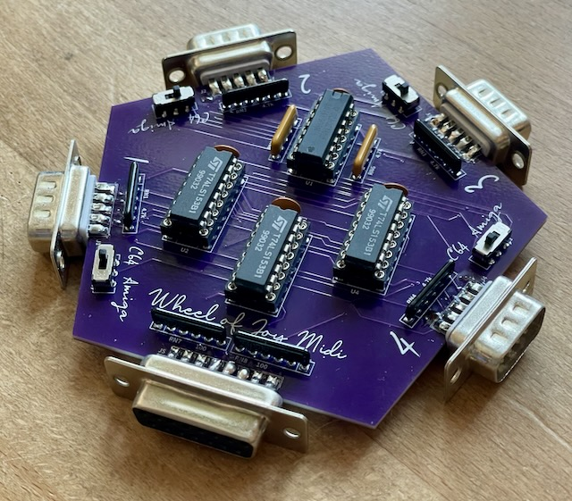
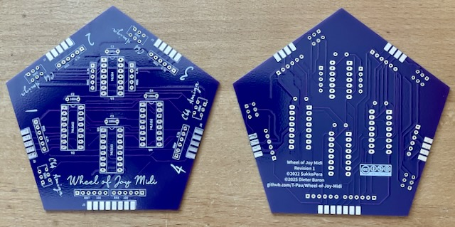

Ich habe die Platine aufgebaut und getestet.
Projekt-Homepage • Interakiver Bestückungsplan • Schaltplan

Mit diesem Adapter kann man 4 Joysticks mit 2 Feuerknöpfen am Userport anschließen. Mit entsprechendem Kabel ist er mit dem Plus/4 oder C64, C128, VC-20 kompatibel. Für den zweiten Feuerknopf werden sowohl C64 (geht nach 5V) als auch Amiga (geht nach GND) Varianten unterstützt.
| Komponente | Anzahl | Preis | Anbieter |
| Platine | 1 | €1.00 | |
| 100nF Kondensator | 4 | €0.12 | Reichelt |
| 6-3 100Ω Widerstandnetzwerk | 2 | €0.16 | Reichelt |
| 5-4 4.7kΩ Widerstandnetzwerk | 2 | €0.16 | Reichelt |
| 6-5 4.7kΩ Widerstandnetzwerk | 4 | €0.28 | Reichelt |
| 2xEin/Ein Schalter, 2.54mm | 4 | €1.60 | Mouser |
| D-Sub-9 Stecker | 5 | €1.00 | Reichelt |
| D-Sub-15 Buchse | 1 | €0.26 | Reichelt |
| 74LS04 | 1 | €0.96 | Reichelt |
| 74LS153 | 3 | €0.63 | Reichelt |
| 14-Pin Sockel, schmal | 1 | €0.21 | Reichelt |
| 16-Pin Sockel, schmal | 3 | €0.69 | Reichelt |
| nur Platine | €1.00 | ||
| Bausatz | €7.07 |
| Komponente | Anzahl | Preis | Anbieter |
| D-Sub-15 Stecker | 1 | €0.35 | Reichelt |
| D-Sub-15 Gehäuse | 1 | €0.87 | Reichelt |
| 13 poliges Kabel, 1m | 0.25 | €0.42 | Reichelt |
| Userport Stecker | 1 | €2.90 | Restore-Store |
| Userport Stecker Gehäuse | 1 | €5.85 | Restore-Store |
| Bausatz | €10.39 |